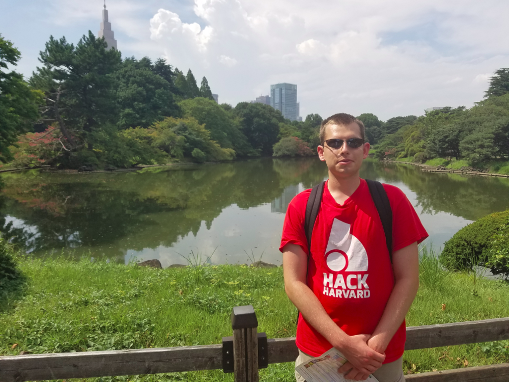

About Austin

My name is Austin and I am a new PhD student at Cambridge studying machine learning. Right now I am excited about accelerating scientific discovery with AI.
Brief bio
- Canadian from Toronto
- BASc at University of Waterloo, PhD at University of Cambridge in progress (should finish mid 2024)
- Like computing, dislike lab work (so I chose to do computing)
Slightly longer professional bio
I have had a varied and interesting university career. At first I thought I wanted to be a chemical engineer... and then I realized that chemical engineers just move fluids through pipes and occasionally heat the pipes (sorry chemical engineers). Then I transferred into a program called nanotechnology engineering, which I found very interesting. This program taught me that:
- Chemistry, and nanochemistry in particular, is extremely challenging, and still not well understood from a theoretical perspective, owing largely to the difficulty of modeling these systems.
- Experimental work is not for me (I am too clumsy and don't enjoy it).
Motivated by this, I transitioned into doing more programming. After getting some experience in the software industry (to learn best practices for coding and development), I am currently undertaking a PhD in machine learning. The research group I belong to specializes in Bayesian machine learning, which has given be the mathematical, statistical, and computational expertise necessary to solve difficult problems.
Outside of work
In my spare time I try to learn things (although I've had much less spare time in my PhD compared to undergrad).
Learning language is something I've enjoyed and want to continue with in the future, partly because it is a (semi-)useful and impressive skill, and partly because I like thinking about different ways ideas can be structured. I also try to optimize things in my life whenever possible. My language skills come and go as I study different things, but at certain points I've had a good grasp (aka intermediate proficiency) of French, German, Mandarin, Esperanto, and Toki Pona (not all at the same time though, I'm not a polyglot). Turkish, Japanese, and Korean are also on my study list.
Other points about me:
- I really liked spaced repetition, especially Anki.
- I used to bake cakes/muffins/cookies a lot (baking is the most precise form of cooking). However recently I've been trying to eat healthier food so I only rarely bake.
- I was a lifeguard/swim instructor for 2 years in high school.
- As a nanotechnology engineer, I have an "approximate knowledge of many things." As a machine learning engineer, I have "many knowledge of approximate things."
- On another page I describe some of my beliefs.